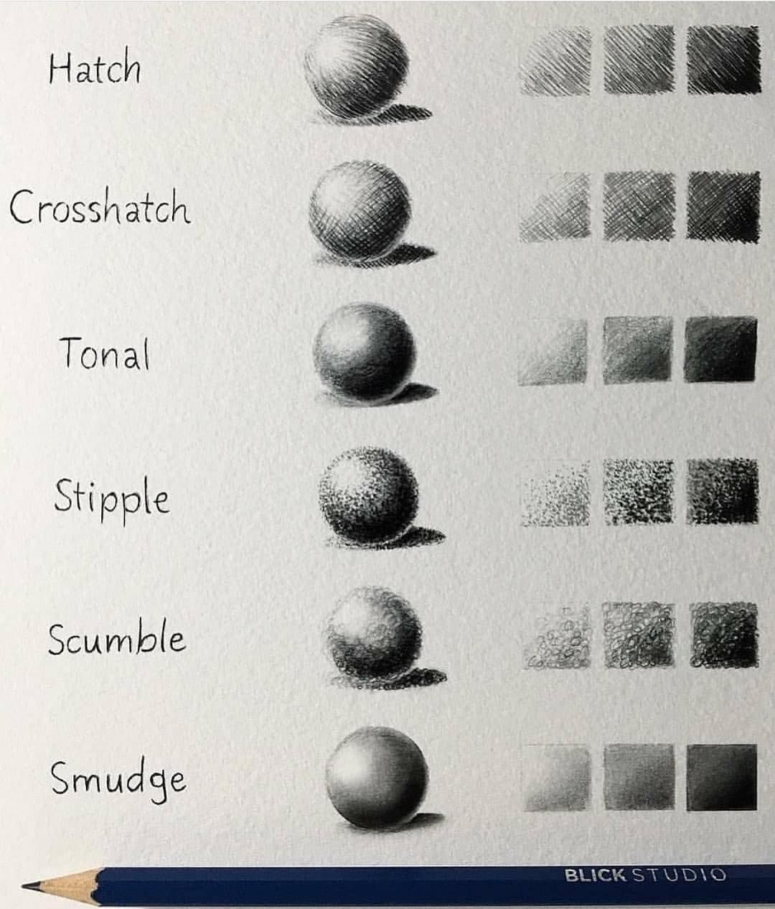
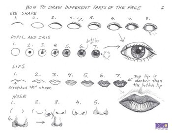
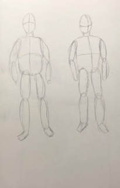

Here are notes on how to draw or give you a base to work on
This shows you how to make a head or face, showing ways to draw realistically.
 These are examples of different types of shading techniques.  The picture shows simple steps that lead you to a realistic drawing. This is an example of drawing the basic outline of a full person.